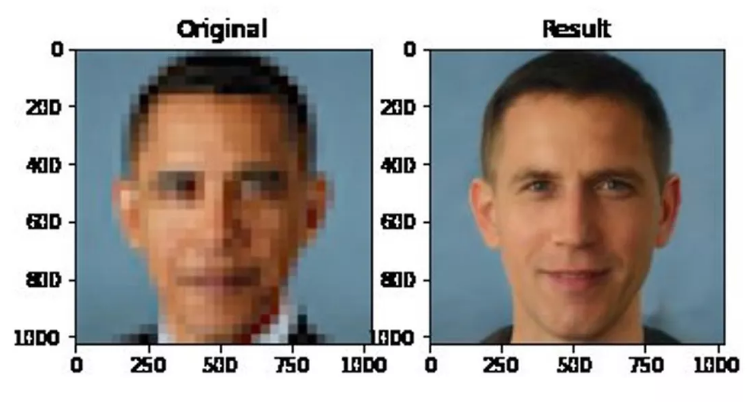
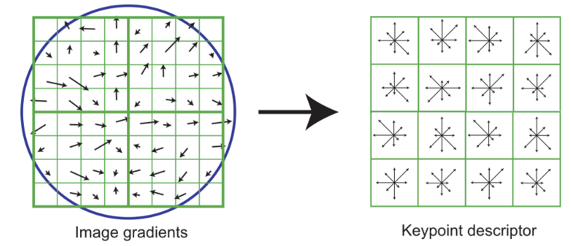

Conserving Labeling Resources and Mitigating Bias from Skewed Datasets
 Credit: Arvinder Singh (IG: @sardarchitect)
Credit: Arvinder Singh (IG: @sardarchitect)
Say you are a researcher in autonomous vehicles, and as part of a project for a funder, you want to make an algorithm to automatically tell if a frame of video has a sidewalk or not. So you get a dataset of driver-view video that you recently collected, hand it off to your labelers, and a month or so later train the model on the labeled data. You get about 90% accuracy on both your train and test sets, and so you push the code to your team’s GitHub, tell your team you have a working algorithm, and celebrate. When the team uses it, however, they make an unpleasant discovery: the algorithm does not detect sidewalks at all! Your troubleshooting brings you to that labeled dataset, and you hang your head in your hands: 90% of the frames in the dataset don’t have sidewalks in them! Instead of learning meaningful decision-making rules, your model has learned to predict that all images do not contain sidewalks.
Or let’s say you’re working at a security company, and your team is tasked with creating a facial recognition algorithm. You spend a few months labeling a dataset of human faces, where the distribution of ethnicities in the dataset matches the distribution of ethnicities in the United States. According to the US Census from 2010, the dataset will be roughly 75% “white alone” faces and 13% “black or African American” faces (as seen in [1], Tab. P3). Then you tuck the dataset away into some folder somewhere and move on to designing the algorithm. When it comes to test time, your algorithm does significantly worse at recognizing dark-skinned faces. This reflects findings from a paper published in 2018 by Buolamwini and Gebru [2], where three commercial facial recognition algorithms trained on two benchmark datasets consisting of roughly 80% / 85% “white” faces had an astonishing 35% error rate on dark-skinned female faces. The consequences of an algorithm biased like this are not theory; less than an hour away from Ann Arbor, a dark-skinned man in Farmington Hills was wrongfully arrested based on a mistake made by a facial recognition algorithm, forcing him to spend thousands of dollars on an attorney to defend himself for a crime he did not commit [3].

Obama being upsampled into a light-skinned man (The Verge)
In either case, you have a critical failure, and your project manager firmly tells you that the product needs to ship in three weeks. One possible solution is to add more data to “balance out” the different image classes: have your labelers find and label more images with sidewalks, or have them find and label more images of people of color. But labeling the original dataset took months, and with the degree of imbalance that you have, it would take a similar amount of resources to successfully address that. And you only have three weeks! Even if you had more time, how do you tell your boss that you now need the team to spend more resources on more labeling work? If only there was a way that you could have balanced the dataset earlier!
Both of these are motivating examples for the problem I am working on in my lab, the Data Elements from Video using Impartial Algorithm Tools for Extraction lab at the University of Michigan Transportation Research Institute (UMTRI-DEVIATE). This is a subproblem we are trying to solve as part of our broader objective to create tools for the Federal Highway Administration (FHWA) to assist labelers with video data. Specifically in this subproblem, we want to save FHWA labelers time with future research tasks, and we want the models they train to avoid bias. We call this problem the “human sampling problem”.
Labeling lots of data is costly. Hiring labelers requires money, and those labelers need time to accurately label a dataset. When it comes to a non-trivial image / video labeling task (for example, drawing bounding boxes around cell phones in videos of someone driving a vehicle), you also need to create a rubric so that all of your labelers are on the same page.
In addition, you may not want to use all that data. If a large dataset is skewed, an algorithm trained on that dataset will in turn be skewed towards making a particular decision. This is the root of both of the failures in the examples presented above – a sidewalk detector trained on skewed data cannot recognize sidewalks, and a facial recognition algorithm trained on skewed data struggles to identify the faces of dark-skinned women.
Considering both of these problems, one possible remedy would be to sample a subset of your original dataset before handing it over to the labelers such that the subset we select is as informative as possible. We hypothesize that a subset with maximum information will not be skewed, i.e. we think a dataset of 10 cats and 90 dogs will probably have less information than a dataset with 50 cats and 50 dogs. The way we have framed this is that we want to maximize gain in information per unit of cost in terms of labeler time.
In short, we want to reduce labeling time as much as possible while minimizing loss in accuracy by sampling a subset of our dataset that contains as much information as possible.
At this point, we are still investigating possible solutions. We are currently testing our ideas on images, with plans to transfer our work to applications on video data. Here’s what we’ve already done and what we’re working on right now:
Sanity checks: We first confirmed that skewed datasets tend to have lower accuracy. Using the Stanford Cars and the FGCV-Aircraft datasets, we looked at samples of 50 of one class versus 150 of the other and compared the results of a model trained on those samples to a model trained on 100 of each. We confirmed that the model trained on the balanced sample tended to outperform the model trained on the skewed samples.
Some examples from the Stanford Cars dataset
The rest of our techniques essentially attempt to learn some representation of each example image in our dataset, then find a sampling strategy such that the examples we sample into our subset are as dissimilar as possible.
SSD: We tried using SSD (sum of square differences) as a distance between every pair of images in our dataset and sampling a subset that maximizes the sum of SSDs between images in the dataset. We did not find a correlation between sum of SSDs in a dataset and model accuracy, because SSD does not encode relevant information. Moreover, we would have to solve an NP-hard problem to accurately maximize the sum of SSDs in a sampled subset, making this strategy unviable on large datasets.
Keypoint/descriptors-based methods: Algorithms like SIFT, SURF, and ORB detect some number of keypoints that describe an image, along with descriptors for each of those keypoints. We first tried getting a single value for each sample image by summing the squared sums of descriptor components, but this did not produce correlations because we lost the spatial information from the keypoints. We are currently using k-means clustering to separate example images into k different image classes determined via unsupervised learning.

The scale-invariant feature transform (SIFT) algorithm in action.
Edge detection: Edges can imply what content is in an image, and a dataset whose images have varying amounts of horizontal and vertical edges may have more information than a dataset whose images’ horizontal and vertical edges are not as varied. We are currently investigating ways to implement and evaluate this idea.
Unsupervised feature encoding with neural networks: By having a neural network (possibly sequence model, GAN) attempt to perform a task, it will learn the features of the data it attempts to perform that task on; we can use those learned features to describe our examples. This is likely appropriate to our problem, but we have not started investigating this yet. I personally think that this approach has merit simply because of how much recent work there has been on this subject, but I wonder if using a learning algorithm to address a problem with a learning algorithm may recurse the problem back into the solution.
For DEVIATE, successfully solving the human sampling problem means we’ll have found a way to reduce labeler workload while also mitigating problems with accuracy and bias that accompany skewed datasets. Our hope is that creating such a tool will let organizations train more effective models with fewer resources, allowing them to invest effort elsewhere in their projects.
If working on this problem interests you, consider following up with me ( musicer@umich.edu) or the advisor for the subteam working on this problem, Dr. Carol Flannagan ( cacf@umich.edu).
Citations:
[1] U.S. Government, “2010 Census Summary File 1,” U.S. Census Bureau, United States, SF1/10-4 RV, 2010.
[2] J. Buolamwini and T. Gebru, “Gender Shades: Intersectional Accuracy Disparities in Commercial Gender Classification”, presented at the 1st Conference on Fairness, Accountability, and Transparency, New York, NY, United States, February 23-24, 2018.
[3] A. Winn, “A Local Case Amplifies Opposition To Facial Recognition Technology”, Hour Detroit, Sept. 14, 2020. [Online]. Available:
https://www.hourdetroit.com. [Accessed Oct. 25, 2020].